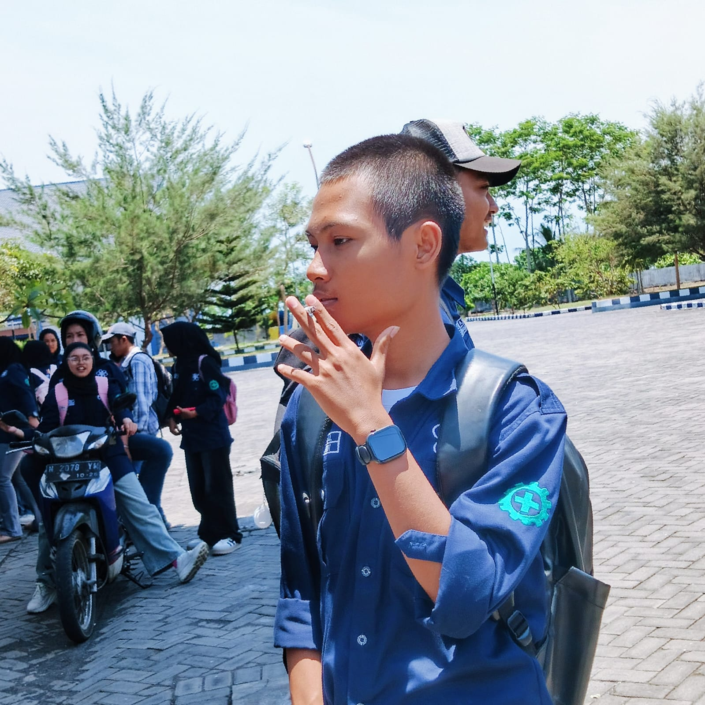
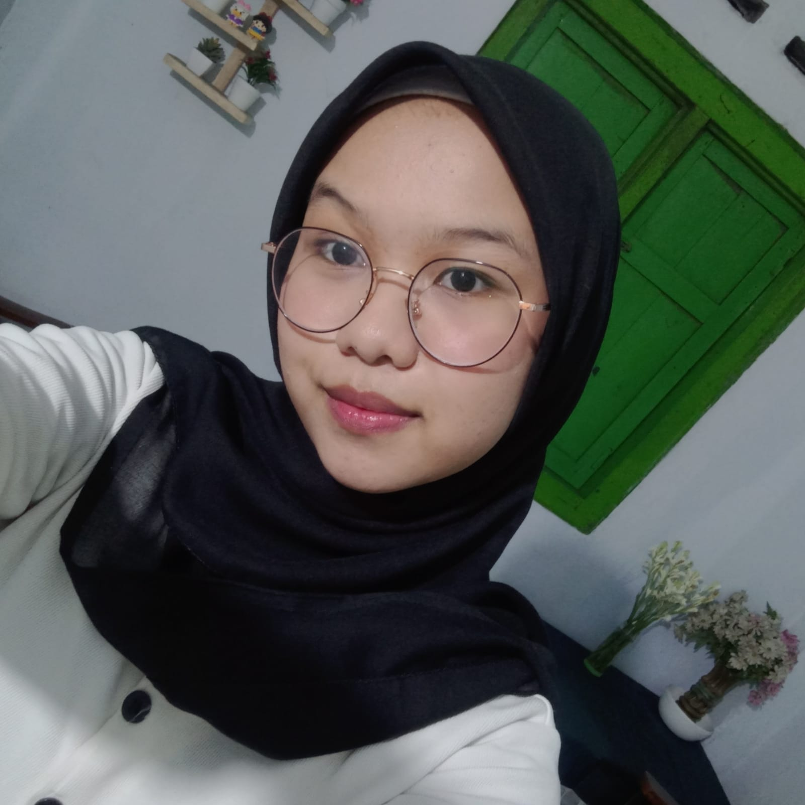
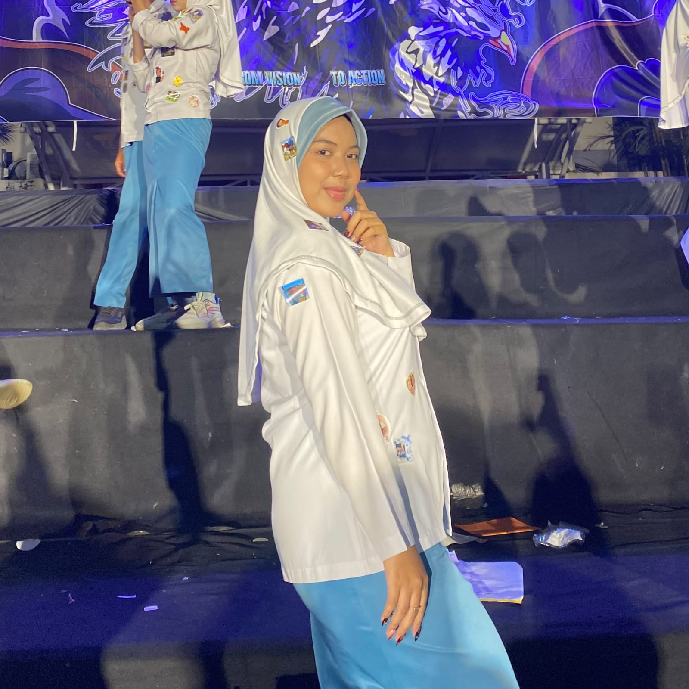

Bijak Menggunakan AC,
Selamatkan Bumi & Dompet
Pelajari dampak penggunaan AC berlebihan dari sudut pandang Agama, Sains, dan Sosial, serta hitung langsung efisiensi penggunaan energi Anda.
Simulasi & Thermostat Remot AC Interaktif
Atur suhu AC Anda untuk melihat dampak langsung terhadap beban listrik, biaya bulanan, dan emisi karbon.
Pengaturan Sangat Efisien & Direkomendasikan!
Suhu 24°C - 26°C adalah batas kenyamanan termal tubuh manusia di daerah tropis. Kompresor bekerja optimal tanpa over-work, menekan pengeluaran listrik hingga 30%.
Pikir Ulang Sebelum Boros
Mengapa pemborosan penggunaan AC harus dihentikan?
Pemborosan Listrik dalam Perspektif Maqashid Syariah
Pelanggaran Prinsip Hifz al-Mal dan Hifz al-Bi'ah demi Keberlanjutan Hidup
Dalam kacamata Maqashid Syariah, hal ini melanggar dua nilai utama, yaitu Hifz al-Mal (menjaga harta) karena listrik adalah sumber daya dan amanah yang harus digunakan secara efisien dan tidak dihamburkan, serta Hifz al-Bi'ah / Hifz an-Nafs (menjaga jiwa dan lingkungan) karena pemborosan energi berkontribusi pada kerusakan alam yang akhirnya membahayakan kesehatan dan kehidupan manusia.
Dokumentasi Kegiatan 5 Hari
Jurnal riset & implementasi penghematan AC lapangan secara bertahap.
Tim Penyusun Proyek
Anggota Kelompok 1

Mizzel Esa Jenar
NIM: 263107040007

Afiyah Nuro Fahzriyah
NIM: 263107040023

Nafara Nuraddina Sandi
NIM: 263107040025